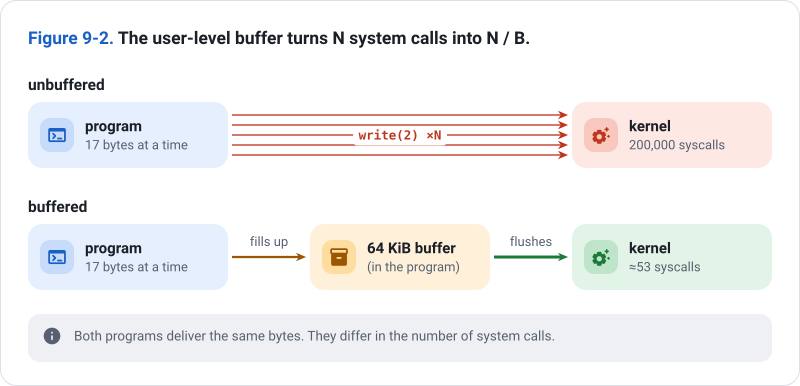

9. The Kernel Boundary and the Cost of System Calls
The system call represents the formal interface between user-mode application logic and the privileged operations of the operating system. It serves as the single, controlled gateway through which a process requests services, such as file I/O, process management, or network communication, that require hardware access or kernel-level authority.
9.1 The Mechanics of the System Call Interface
A system call is initiated via a specialized trap instruction executed by a user-mode C library wrapper (syscall on x86-64; svc #0 on ARM64). Unlike an ordinary function call, which pushes a return address and jumps within the same privilege ring, a system call must cross the hardware isolation boundary separating Ring 3 (User Mode) from Ring 0 (Kernel Mode). The wrapper places a numeric system call identifier into a designated register (rax on x86-64 Linux; x8 on ARM64 Linux; x16 on Apple Silicon Darwin) and loads up to six arguments into fixed argument registers (rdi, rsi, rdx, r10, r8, r9 on x86-64; x0 through x5 on ARM64) before executing the trap instruction.
Upon executing the trap, the processor saves the user program counter and processor flags, elevates the Current Privilege Level (CPL) to kernel mode, switches the stack pointer to the thread’s private kernel stack (TSS.rsp0 / per-CPU kernel stack), and jumps to the kernel’s registered system call entry vector (MSR_LSTAR on x86-64; VBAR_EL1 on ARM64). The kernel indexes into its system call dispatch table (sys_call_table) using the provided identifier, executes the handler, places the result into the return register, and restores user mode via sysret or eret.
Two architectural invariants govern every crossing of this boundary:
- Untrusted User Pointers: The kernel treats all incoming arguments, including system call numbers, user buffer pointers, and byte counts, as untrusted. Before reading or writing a user buffer, the kernel validates that the virtual address range lies strictly below the user/kernel address boundary and accesses it through fault-safe copy helpers (
copy_from_user/copy_to_user) so a malformed pointer producesEFAULTrather than a kernel panic. - Error-Return Convention (
errno): At the raw hardware ABI level on Linux, a handler returning a value in[-4095, -1]signals failure, with the negated value encoding the POSIX error number. The C library wrapper intercepts negative kernel returns, stores the positive error code in the thread-local variableerrno, and returns-1to application code. Checking the return value before inspectingerrnois mandatory because successful system calls do not clear a staleerrnofrom an earlier failure.

9.1.1 Why Benchmarking Uses getppid(), Not getpid()
Measuring the pure cost of a privilege transition requires invoking a minimal system call that performs almost no work inside the kernel. A natural candidate would appear to be getpid(), yet on several platforms (including macOS/Darwin and historical glibc releases) the C library caches the process identifier in user-space memory after the first invocation, invalidating the cache only across fork(). Calling getpid() in a tight loop would therefore measure a user-mode memory load rather than a kernel trap. Similarly, on Linux, high-frequency queries such as clock_gettime() and gettimeofday() are accelerated via the vDSO (virtual Dynamic Shared Object), a read-only kernel page mapped directly into user space so processes read calibrated clock counters without trapping into Ring 0. By contrast, getppid() cannot safely be cached in user space because the parent process may terminate asynchronously and cause the kernel to reparent the caller to PID 1; every call to getppid() must therefore execute a genuine user-to-kernel-to-user transition.
9.2 Performance Implications and Optimization via Buffering
Crossing the user/kernel privilege boundary incurs substantial hardware overhead. Saving and restoring architectural register state, applying security mitigations (such as Kernel Page Table Isolation, KPTI, which switches page tables on Meltdown-affected processors), and perturbing L1 instruction caches and branch predictors render a bare system call roughly two orders of magnitude slower than an ordinary user-mode function call.
To amortize this privilege-transition penalty across high-volume I/O workloads, runtime libraries employ user-space buffering. Rather than issuing a write(2) system call for every 17-byte log line, a buffered stream (C’s FILE* with fwrite, C++’s std::ostream, or Rust’s BufWriter) appends small writes into a contiguous user-space buffer (for example, 64 KiB). Only when the buffer fills, or when the caller explicitly invokes fflush() / flush(), does the library issue a single large write(2) system call to transfer all 64 KiB into the kernel at once.
Buffering trades immediate visibility for throughput. Bytes residing in a user-space buffer are invisible to the kernel and to other processes; if the process terminates abruptly via SIGKILL, _exit(), or a segmentation fault prior to flushing, buffered data is silently lost. Mixing raw file-descriptor writes (write(fd, ...)) with buffered library writes (fwrite(..., f)) on the same underlying descriptor also produces reordered output unless the user buffer is flushed before switching interfaces.
9.2.1 The POSIX Descriptor I/O Interface (open, write, close, setvbuf)
Listings 9-3 and 9-4 directly compare unbuffered kernel writes against 64 KiB user-space buffering using four standard interfaces:
int open(const char *pathname, int flags, ... /* mode_t mode */);
ssize_t write(int fd, const void *buf, size_t count);
int close(int fd);
int setvbuf(FILE *stream, char *buf, int mode, size_t size);
open(pathname, flags, [mode]): Resolvespathnamein the virtual filesystem, allocates an open file description in the kernel, and installs a reference to it in the lowest unused slot of the calling process’s file descriptor table.pathname: Null-terminated filesystem path. Listings 9-3 and 9-4 open/dev/null, a virtual character device whose kernel driver immediately discards every written byte and returns success, isolating pure system-call overhead from storage latency.flags: Bitmask combining exactly one access mode (O_RDONLY,O_WRONLY, orO_RDWR) with optional creation or status flags (O_CREAT,O_TRUNC,O_APPEND,O_CLOEXEC). PassingO_WRONLYrequests write-only access without creating a new file.mode: Optional octal permission mask (such as0644) required only whenO_CREATis included inflags.- Return value: A non-negative integer file descriptor (
fd >= 0) on success, or-1on failure witherrnoset (for example,ENOENTif the path does not exist,EACCESon permission denial, orEMFILEif the process descriptor table is full).
write(fd, buf, count): Requests that the kernel transfer up tocountbytes starting at user addressbufto the resource referenced byfd.- Return value (
ssize_t): A signed byte count indicating how many bytes were actually accepted (0 <= n <= count), or-1on error (EINTRif interrupted by a signal before any byte transferred,EAGAINon a full non-blocking descriptor,EPIPEif writing to a closed pipe or socket, orENOSPCif storage is exhausted). - Short-write invariant: POSIX permits
write()to transfer fewer thancountbytes even without an error (commonly on pipes, sockets, or interrupted disk writes). Production code must therefore wrap rawwrite()calls in a loop that advances the slice offset until all bytes are written, as demonstrated in Listing 9-4.
- Return value (
close(fd): Releases the descriptor slot in the process’s file descriptor table and decrements the kernel open file description’s reference count, freeing kernel resources once the final reference closes. Returns0on success or-1on error (EBADFfor an invalid descriptor, orEIOfor delayed write errors).setvbuf(stream, buf, mode, size): Configures the buffering policy of a CFILE*stream immediately after opening it and before any I/O occurs. Passingbuf = nullptrdirects the C library to allocate a buffer ofsizebytes (64 * 1024) internally, whilemodeselects full buffering (_IOFBF, flushing only when full or explicitly flushed), line buffering (_IOLBF, flushing on newline), or unbuffered mode (_IONBF). Returns0on success and non-zero on failure.
Listing 9-1. A system call compared with a function call (C++20).
// ch09/syscall_cost.cpp: compare a system call with a plain function call.
#include <unistd.h>
#include <chrono>
#include <cstdint>
#include <cstdio>
__attribute__((noinline)) int plain_fn(int x) { return x + 1; }
int main() {
constexpr uint64_t kN = 5'000'000;
// Plain function calls: nothing leaves user mode.
uint64_t acc = 0;
auto t0 = std::chrono::steady_clock::now();
for (uint64_t i = 0; i < kN; ++i) {
acc += static_cast<uint64_t>(plain_fn(static_cast<int>(acc & 0xff)));
}
auto t1 = std::chrono::steady_clock::now();
double fn_ns =
std::chrono::duration<double, std::nano>(t1 - t0).count() / kN;
// System calls: each one traps into the kernel and back. We use getppid(),
// not getpid(): on macOS libc caches getpid() after the first call, so a
// getpid() loop would measure a library lookup, not a trap.
pid_t pid = 0;
auto t2 = std::chrono::steady_clock::now();
for (uint64_t i = 0; i < kN; ++i) {
pid = getppid();
}
auto t3 = std::chrono::steady_clock::now();
double sys_ns =
std::chrono::duration<double, std::nano>(t3 - t2).count() / kN;
printf("plain function call : %7.1f ns\n", fn_ns);
printf("getppid() system call: %7.1f ns\n", sys_ns);
printf("ratio : %7.1fx\n", sys_ns / fn_ns);
printf("(parent pid %d, checksum %llu)\n", pid,
static_cast<unsigned long long>(acc));
}
Output 9-1. One run on the verification machine.
plain function call : 2.1 ns
getppid() system call: 586.8 ns
ratio : 277.2x
(parent pid 63901, checksum 1279998207)
Listing 9-2. The same comparison in Rust.
// ch09/syscall_cost.rs: the same comparison in Rust.
use std::hint::black_box;
use std::time::Instant;
#[inline(never)]
fn plain_fn(x: i32) -> i32 {
x + 1
}
fn main() {
const N: u64 = 5_000_000;
// Plain function calls: nothing leaves user mode.
let mut acc: u64 = 0;
let t0 = Instant::now();
for _ in 0..N {
acc += plain_fn(black_box((acc & 0xff) as i32)) as u64;
}
let fn_ns = t0.elapsed().as_nanos() as f64 / N as f64;
// System calls: each one traps into the kernel and back. We use getppid(),
// not getpid(): on macOS libc caches getpid() after the first call, so a
// getpid() loop would measure a library lookup, not a trap.
let mut ppid: libc::pid_t = 0;
let t1 = Instant::now();
for _ in 0..N {
// SAFETY: POSIX `getppid()` executes a pure user-to-kernel mode switch (ring 3 -> ring 0).
// It requires no memory pointers and cannot fail or corrupt process state.
// We measure `getppid()` rather than `getpid()` because modern macOS libSystem caches
// `getpid()` in user-space TLS after the initial call, which would measure a simple
// memory load rather than a full CPU hardware trap and context transition.
ppid = unsafe { libc::getppid() };
}
let sys_ns = t1.elapsed().as_nanos() as f64 / N as f64;
println!("plain function call : {fn_ns:7.1} ns");
println!("getppid() system call: {sys_ns:7.1} ns");
println!("ratio : {:7.1}x", sys_ns / fn_ns);
println!("(parent pid {ppid}, checksum {acc})");
}Output 9-2.
plain function call : 1.8 ns
getppid() system call: 582.7 ns
ratio : 327.7x
(parent pid 63901, checksum 1279998207)

Listing 9-3. 200,000 small writes, unbuffered and buffered (C++20).
// ch09/write_buffered.cpp: many small writes, buffered and unbuffered.
#include <fcntl.h>
#include <unistd.h>
#include <chrono>
#include <cstdio>
int main() {
constexpr int kN = 200'000;
const char msg[] = "0123456789abcdef\n"; // 17 bytes
int fd = open("/dev/null", O_WRONLY);
if (fd < 0) {
perror("open");
return 1;
}
// Unbuffered: one write(2) system call per iteration.
auto t0 = std::chrono::steady_clock::now();
for (int i = 0; i < kN; ++i) {
write(fd, msg, sizeof msg - 1);
}
auto t1 = std::chrono::steady_clock::now();
double raw_ms = std::chrono::duration<double, std::milli>(t1 - t0).count();
// Buffered: stdio accumulates in a 64 KiB buffer, then flushes once.
FILE* f = fopen("/dev/null", "w");
setvbuf(f, nullptr, _IOFBF, 64 * 1024);
auto t2 = std::chrono::steady_clock::now();
for (int i = 0; i < kN; ++i) {
fwrite(msg, 1, sizeof msg - 1, f);
}
fflush(f);
auto t3 = std::chrono::steady_clock::now();
double buf_ms = std::chrono::duration<double, std::milli>(t3 - t2).count();
printf("write(2) into /dev/null, %d x 17 bytes : %7.1f ms\n", kN, raw_ms);
printf("fwrite buffered, %d x 17 bytes : %7.1f ms\n", kN, buf_ms);
close(fd);
fclose(f);
}
Output 9-3.
write(2) into /dev/null, 200000 x 17 bytes : 274.3 ms
fwrite buffered, 200000 x 17 bytes : 12.0 ms
Listing 9-4. The same comparison in Rust, with write(2) and BufWriter.
// ch09/write_buffered.rs: the same comparison with raw write(2) and BufWriter.
use std::fs::File;
use std::io::{BufWriter, Write};
use std::time::Instant;
const N: usize = 200_000;
const MSG: &[u8] = b"0123456789abcdef\n"; // 17 bytes
fn main() -> std::io::Result<()> {
// SAFETY: The path string literal is static, null-terminated, and safely cast
// to a C-compatible pointer. `O_WRONLY` is a valid POSIX file flag.
let fd = unsafe {
libc::open(b"/dev/null\0".as_ptr() as *const libc::c_char, libc::O_WRONLY)
};
if fd < 0 {
eprintln!("open failed");
std::process::exit(1);
}
// Unbuffered: one write(2) system call per iteration.
let t0 = Instant::now();
for _ in 0..N {
let mut written = 0usize;
while written < MSG.len() {
// SAFETY:
// 1. `fd` is verified valid and open for writing.
// 2. `MSG[written..]` references initialized, static read-only memory.
// 3. Length `MSG.len() - written` accurately describes the remaining slice,
// preventing out-of-bounds kernel memory reads.
let n = unsafe {
libc::write(
fd,
MSG[written..].as_ptr() as *const libc::c_void,
MSG.len() - written,
)
};
if n <= 0 {
break;
}
written += n as usize;
}
}
let raw_ms = t0.elapsed().as_secs_f64() * 1000.0;
// Buffered: BufWriter accumulates in a 64 KiB buffer, then flushes once.
let f = File::create("/dev/null")?;
let mut w = BufWriter::with_capacity(64 * 1024, f);
let t1 = Instant::now();
for _ in 0..N {
w.write_all(MSG)?;
}
w.flush()?;
let buf_ms = t1.elapsed().as_secs_f64() * 1000.0;
println!("write(2) into /dev/null, {N} x 17 bytes : {raw_ms:7.1} ms");
println!("BufWriter, {N} x 17 bytes : {buf_ms:7.1} ms");
// SAFETY: `fd` is a valid open file descriptor returned by `open()`. Closing it releases
// the kernel file description ref-count and frees the file descriptor table entry.
unsafe { libc::close(fd) };
Ok(())
}Output 9-4.
write(2) into /dev/null, 200000 x 17 bytes : 276.0 ms
BufWriter, 200000 x 17 bytes : 0.6 ms